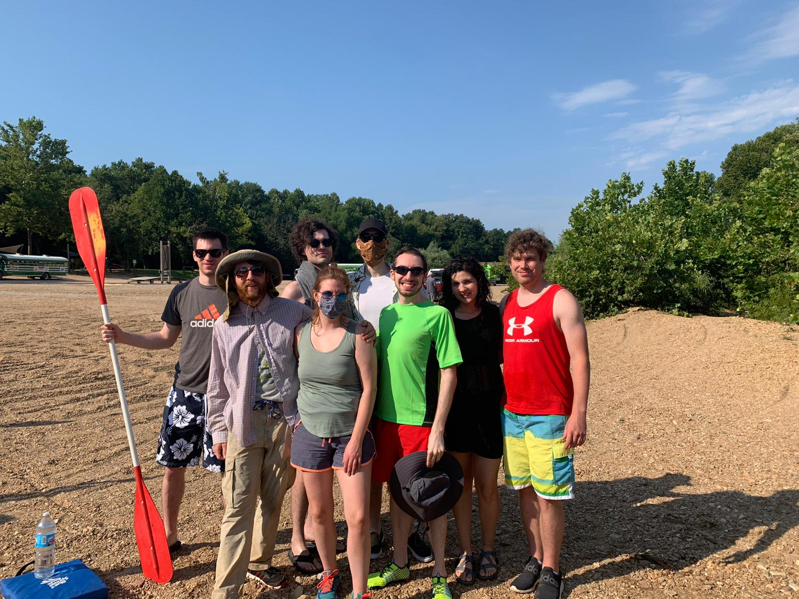
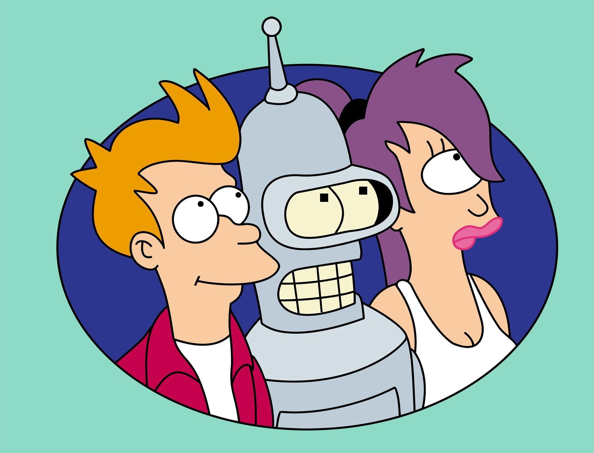

Hi everyone! I’m Amanda. Lots of people call me Mandy, but I really don’t have a preference. I grew up in the St. Louis area, and moved to Upstate New York in 2017; I lived there for 3 years before deciding to move back to St. Louis to be back around my family and familiar places. I currently work as a nurse in a busy ICU in the area, and have more frequently started questioning if it is something I want to do for the rest of my life. The short answer is—I don’t think so. I applied to LaunchCode at the recommendation of a couple of my closest friends who have also been through the program. I have really enjoyed my time in the class so far, and hope to be able to keep going. For this particular project, I wanted to show you all some of my favorite things to do when I have free time. I like to think that I’m a pretty creative person. I like to tinker, and make things from scratch. I have a lot of fun just trying new things and seeing what happens, which can sometimes be fun, scary, or disappointing. I hope you like the stories and pictures!

Cartoons
I really like cartoons. Any animated medium is just pretty amazing to me. The stories that can be told through drawings or CG images is really cool. I have a lot of favorites.

Cosplay
One of my favorite hobbies is cosplay. I have always enjoyed a pretty wide variety of genres and types of media: sci-fi, comic books, cartoons, anime, video games, novels, you name it. And I love to try to bring aspects of those things I enjoy into the ‘real world’. Creating costumes, especially the ones with intricate design elements and props or weapons is my favorite part. I feel like I’m always learning a new technique or skill with crafting or sewing, embroidery, wood-working, sculpting, et cetera, et cetera, et cetera. The bigger the challenge, the more fun I have making it come to life. With COVID, and needing to work more shifts at the hospital, I haven’t had as much time in the past year to work on cosplay as I would like to. Many events and conventions haven’t been running, so I haven’t had the chance to showcase any of my new projects. Hopefully I’ll have the chance to soon!
Another thing I like to do is play music. I’ve played a musical instrument for as long as I can remember. My primary instruments are guitar and cello. I also like to sing, but mostly just in my car and in the shower. I think I like all genres of music.
Coffee (& Other Stuff)
I included coffee on this page because I think it plays a pretty significant role in my life. Not only does it give me energy to go through my day (which I need a lot of—I work overnight and am frequently shifting my sleep schedule around to accommodate daily activities), but it also is a part of my routine that provides me comfort, and it is something that has brought me together with my friends, new and old.
The ‘& Other Stuff’ bit I wanted to include as an excuse to talk about my favorite vacation I went on, which was to Japan. My best friend and I spent 2 weeks adventuring around Tokyo, Kyoto, and Osaka. It was my first trip outside of the US, and it was so interesting to be immersed in a different culture. I hope I can have the opportunity again to travel to a different part of the world.